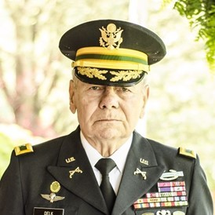

"Postcards Through Hell is a riveting journey through
war-torn Afghanistan that shares the brave and daring ride
of private military contractors as they fight their way
through unforgiving territory day in and day out to deliver
the US mail. It is a story that is as exciting and engaging
as any I’ve read on this subject.
This book brings a world
to the doorstep of every reader who has never begun to
imagine the risks that so many of them make in order to
take care of our military personnel serving in combat zones.
The story goes beyond capturing the history surrounding this
rare segment of Americans and third country nationals who
sign up and put their lives on the line – it shares an
equally important look into the cultural nuances that it
takes to survive in the Middle East. This stark reminder is
important for readers to learn from the perspective of those
willing to risk their lives to deliver the mail – something
that most of us take for granted when they see the US Postal
delivery person go about their jobs on a daily basis, in
relative safety."
Major Scott A. Huesing, USMC (Ret.)
Best-Selling Author - Echo in Ramadi
As a commissioned officer and soldier with previous
deployments to Iraq and Afghanistan, the “Postcards Through
Hell” took me back to my own experiences and I was immediately
able to identify with the mission objective. These men, many
prior military, opted to work in one of the most dangerous
professions worldwide and without the protection of the
military at their back. As professional security contractors
Edward Ford and Alan Chiasson present a clear and thrilling
picture of what some might believe a mundane job, driving
supply routes.
The reality is far from it, these men employed tactics,
techniques, and procedures honed from years of collective
experience in the theater of war to survive in a hostile
environment. Despite my many years of service, I learned
much and developed a greater appreciation for security
contractors. This book is “a must read” for all who are
considering working in the private sector as a security
contractor. As with combat missions, the men of the Pony
Express lost brothers, and this work serves to honor and
preserve their memory. It was a privilege to read, I
salute you all!
Peter Coldwell, M.D.
COL, MC, FS, TXARNG

Focusing on a brief three-year period in Afghanistan,
“Postcards Through Hell” accurately, and brilliantly
portrays the functions, tactics, techniques, and
procedures employed by these incredible security and
force protection contractors in both of the most
lethal environments of this century—Iraq and Afghanistan.
Charged with missions in areas where the shrinking
military lacked the manpower to operate, these heroic
contractors served our Nation with extraordinary pride
and distinction, while largely ignored by the media,
without acclaim for their courageous acts, and embracing
the hope for but one reward—to return home safely. My
compliments to the authors of this magnificent account,
Edward Ford and Alan Chiasson.
Lucious E. (Ed) Delk, Colonel, U.S. Army (Ret.)
"The following is my endorsement for the upcoming book,
“Postcards Through Hell,” authored by Alan Chiasson and
Edward Ford. During my tenure at Camp Phoenix, I was
fortunate enough to have family that supported me greatly
in my mission there. I was constantly receiving packages
and mail from home; plus, packages I had ordered for
equipment that I needed to perform my duties. The Pony
Express, as they were known, were responsible for making
sure that our packages and mail always got delivered to
Camp Phoenix on time. I don't think they ever failed
their mission, despite the tremendous adversity and danger
they faced on a daily basis.
Their exploits moving through extremely hostile zones on
the road are the stuff legends are made of. I do not say
that lightly, having spent almost 10 years working
security in both Iraq and Afghanistan. I speak fondly
of these men and their team to this day. There is nothing
that lifts moral more in a combat zone than receiving
mail and care packages from home. Without it, life there
would be completely miserable. So my team and I were always
excited when we saw their big gray gun trucks pull in
through the gate. We knew what they faced to bring us a bit
of happiness from home. Without a doubt, this book would
be very well received by the military community, the loved
ones of all of those people who sent mail and the general
public at large. It would give them a glimpse inside the
world of these men, and what happened when they sent a
"Postcard Through Hell."
Dave Marris CEO
Black Moon Consulting
"Many think wars are fought by those who sign a contract
with their country, but this is not necessarily so.
Modern warfare today has seen an influx of dedicated
men and women who feel the business of protecting freedom
is not done by simply stepping out the military and hanging
up the uniform. “Postcards Through Hell” highlights this
transition from uniform to an even greater cause of
friendship, brotherhood and courage, spanning a community
only very few have shared the experience of.
These elite warriors risk their lives in the pursuit of
freedom and liberty for all, running and gunning in hostile
landscapes where mercy is not in the enemy’s credo. I am
now a politician but was once a contractor and I have worked
closely with these brave individuals. “Postcards Through Hell”
is a true account of the lives of those who took great risk
in seeing necessary supplies were delivered including the US
Mail, to allow freedom to prevail.
Paul Golle, Elected Government Official Redland City Council
Former Australian Military and Security Contractor
"POSTCARDS THROUGH HELL", by turn is an exciting, powerful,
and action-packed read. In this book of adventures,
Ford and Chiasson have you follow in their footsteps as
team members weaving a tale of unforgettable survival and
determination to complete some of the most dangerous missions
faced by security contractors working outside the wire in
Afghanistan. I highly recommend this exhilarating book to be
read by all. It gives you an insight to a world most civilians
never knew existed and how these men put their lives on the
line to deliver the US Mail.
Robert Bierman, NYPD ESU (Ret.)
"The image is as lurid as it is false. American security
contractors operating in the war-torn Middle East--a gang
of adrenaline junkies seeking another fix--a bunch of
ex-military mercenaries selling the skills they honed in
uniform in exchange for cold cash.
If that's what comes to
mind when you ponder Security Contractors in combat zones
like Iraq and Afghanistan, you need to read this book.
Veteran-authored by men who laid their lives on the line
in Afghanistan mainly because they thought it the right
thing to do for their country, The Pony Express, is both
an eye-opening, detailed account of Contractor operations
and a penetrating look into the hearts and minds of
patriots who continued to fight for the better good once
they'd shed the official uniform. Here's the unvarnished
story of the outriders who kept vulnerable supply convoys
moving along Afghanistan's infamous, blood-soaked Ring
Road and it's a thrilling read."
Captain Dale A. Dye, USMC (Ret.)
Author of Run Between the Raindrops and the Shake Davis Series
"As a leader of Marines and a combat veteran, this book
provides all of the information one would expect from
combat veterans. In combat, as in military life in
general, there are always unforgettable moments that stay
with us. Many are funny and nostalgic, while others are
tragic, provoking long moments of thought as we lose
comrades, bringing home the realization that we worked in
a very dangerous occupation.Ed Ford and Alan Chiasson
provide all of these examples in this extremely
informative and readable project.
People will learn
interesting things about the world of contracting, which
carries many of the same dangers as serving in frontline
combat units. In becoming aware of this project, I was
educated as to many things with which I was not familiar,
yet also the memory was triggered by many things that I
also experienced. The reader will enjoy the operational
details and methods, while also learning about a world
that is not well known outside the operators themselves. I
would suggest that people considering military service in
general, and military support contracting in particular
read this book. Being well informed prior to making such
life altering decisions is not just wise, it is expected
of the true professional. Many of us may leave the service
and take off the uniform, but we never stop being
patriotic Americans. These men who served on active duty
then decided to serve our nation further did so at great
risk. We can be proud of their service and their
dedication. God bless them all"
Major General James E. Livingston, USMC (Ret.)
Congressional Medal of Honor Recipient
As a 39-year veteran of the Postal Service and the 73rd Postmaster
General from 2010 to 2015. I am proud to offer this endorsement
for the Pony Express. The book “Postcards Through Hell” is a fascinating
true tale of some of the bravest men to deliver the US Mail in war-torn
Afghanistan. This book suits either the historian or the non-fiction reader.
It is a riveting account of the SOC Mobile Operations teams who were
contracted to support the military by delivering US Mail and other critical
supplies throughout Afghanistan.
I was not aware of their individual exploits
until I read this book. Authors Ford and Chiasson offer perspectives that I
have not encountered before despite reading other books on war. “Postcards
Through Hell” paints a very clear and succinct picture of what it was like
to run missions as security contractors along Ring Road, the deadliest road
in the world. The men of the Pony Express are true patriots who risked life
and limb to provide our military and other contracted companies their only
real connection to home, the US Mail. I highly recommend this book to anyone
interested in learning about their heroic acts despite overwhelming odds against
the Taliban and other criminal insurgents. They are all heroes in my eyes and I
truly thank them for a job well done.
Patrick R. Donahoe, Former Postmaster General USPS
"Postcards Through Hell" is an engaging and gripping
account of a world many of us have heard about but know
little of. That of the Security Contractor. It opens the
door in a factual, honest and “boots on the ground”
detailed manner that allows the reader to feel as if they
too are part of the “Team”.
Authors Ford and Chiasson bring
the reader along to participate in the hell these brave men
survived and share in the special bond that is the brotherhood
of warriors. These were missions they endured with little
public recognition, understanding or accolades. I recommend
this book strongly to anyone who wishes to expand their
understanding of what was (and may continue to be) a significant
part of the campaigns in both Iraq and Afghanistan."
David S. Reny, MSc.
International Airline Captain
Canadian "Cold War" Army Veteran
As a journalist embedded during Operation Desert Storm,
I have unfortunately seen firsthand, the remnants of War.
War is not something easily explained to the average person.
To literally have your life in the hands of the person next
to you is not something most people will never comprehend,
but that trust is expected in battle and freely given. It is
that brotherhood and commitment that draws the warrior to
battle. “Postcards Through Hell” details a group of warriors
who share that same kind of brotherhood. They shed their
countries uniforms and donned the tactical garb of the private
security contractor, yet they still put their lives on the line
for the American Military every day.
I have personally volunteered
for organizations that put together care packages for Soldiers
Sailors, Airmen and Marines and have heard time and time again
how much those packages mean to the men and women receiving
them. The men of the Pony Express delivered those packages.
Forget snow, rain, sleet or hail, try bullets, roadside bombs,
RPG’s and the Taliban keeping you from your appointed rounds.
The Pony Express drove the most dangerous road in the world,
and sometimes off road, to deliver the mail! “Postcards Through
Hell” is their account of that brotherhood, the danger, and the
commitment it took to come through for American and coalition
forces. As private contractors they often faced an uphill battle,
but as Brothers they always got the job done. Thank you Gentlemen
for sharing your thrilling, dangerous, and deadly accounts of
what it took to drive on Ring Road, and Thank you most of
all for your Service and your Sacrifice.
David Weed, Investigative Journalist
National PIO - The Thin Blue Line LEMC
It’s difficult to have a true appreciation for
the sacrifices of those who valiantly serve
in our Armed Forces or in the world of private
security contracting. I think it’s fair to say
that, when we hear the word “sacrifice”, we
immediately think of the ultimate one: the giving
up of one’s own life for the preservation of
another’s. The enormity of such selflessness
can never be overstated and those who have the
courage to offer their lives for that possible
outcome must always be honored. That said, there
are smaller sacrifices that these brave soldiers
make in the day to day grind of war. There are
mental and emotional sacrifices that only come
from constant near-death experiences, sacrifices
that are perhaps “small” relative to the
aforementioned ultimate one, but relentlessly pile
up nonetheless. This is what the book “Postcards
Through Hell” perfectly encapsulates.
The toils
of the human heart and mind in the midst of combat
are delivered by the authors with a precision and
utility that one would expect from meticulously
disciplined warriors such as themselves. Their
authentic human experiences as contractors in the
Middle East - one of the most dangerous regions
on Earth - provides invaluable historical context
to an era that we still find ourselves living in.
Anyone wishing to understand and honor our modern
day heroes will find this book a definite “must read”.
Greg Chaisson, Bass Guitarist
Badlands, Kings of Dust
I am super proud of the authors, their team, their mission
and their book. As a Man who has lived abroad in War Zones
for many years, even into 2020, I have always been grateful
to those who risk all to keep us connected to the world -
They're true, unsung heroes. “Postcards Through Hell” is an
awesome, timely and much needed book, to remind us all,
especially in these pandemic days, how crucial their mission
is, and how great their risk is, to deliver mail through
conflict, they help keep society together and help us all
survive. For those who risk it all to deliver the mail - God
Bless!
Mykel Hawke, Retired Special Forces Combat Officer
TV Host & Author
"Postcards Through Hell” is a fascinating account of
the daily dangers and challenges that forged deep
bonds of trust and friendship between men. The
detailed mission descriptions provide a glimpse
into a place and a profession few of us can imagine.
Despite the intense trials of life in Afghanistan,
the sense of purpose and camaraderie seduced these
men far from their homes, families, and comforts.
Within this memoir, there are great lessons to be learned
about finding meaning and fulfillment in life.
Juliet Breeze, M.D.
CEO - Next Level Urgent Care
America is well-known for having men of honor and courage.
These men of the Pony Express are just one of many groups
of young Americans, mostly combat vets, who continue to
risk injury and death to serve our nation, and augment
our military forces. Tough duty, hard men, and a very good read.
Col. Walter Boyne, USAF (Ret.)
A powerful narrative that brings to
light a hitherto unexamined aspect of
the war in Afghanistan: security contractors at war.
Eric Hammel, Author of Two Flags Over Iwo Jima